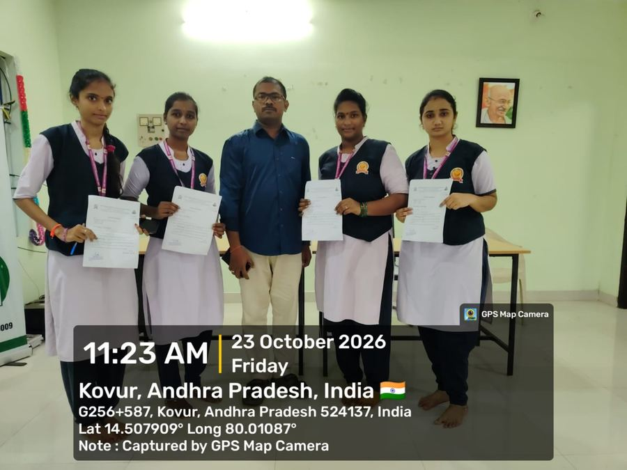
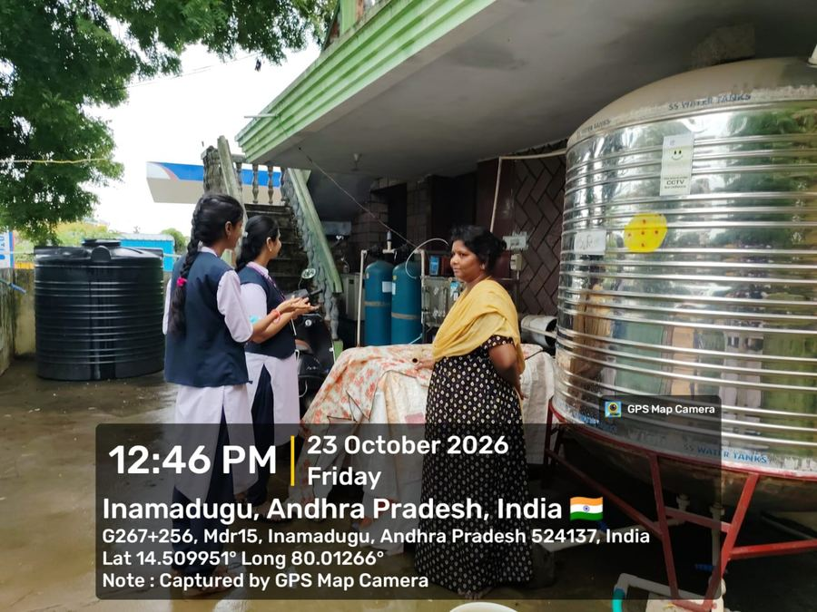
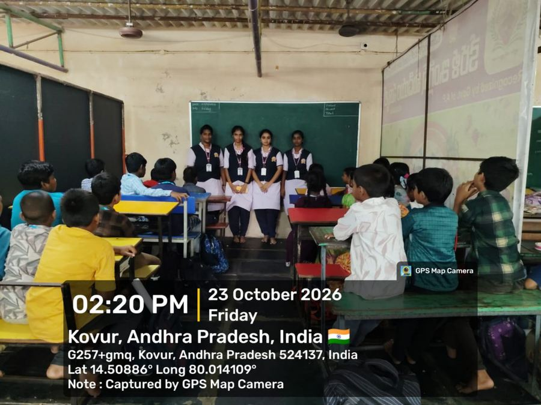

Community interaction and awareness
We spoke directly with residents of Inamadugu about hygiene, safe water and daily health practices, and listened to the challenges they face.
What we did in Inamadugu and Kovur on 23 October 2026.

We spoke directly with residents of Inamadugu about hygiene, safe water and daily health practices, and listened to the challenges they face.

We visited a home with a water purification setup and storage tanks to learn how clean drinking water is treated, stored and kept safe.


Team members held fun, simple sessions for LKG and primary students at Kovur on washing hands, staying clean and eating well.


At the Primary Health Centre, Inamadugu, we met the lab technician and pharmacist and learned how a village health centre serves its community.